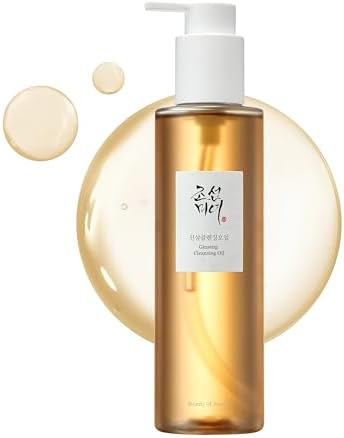
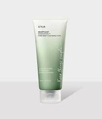

✨ Il Rituale Coreano in 10 Passi
Scopri la filosofia "skin-first" che rivoluzionerà la tua pelle

Fase 1-2
1. Oil Cleanser (클렌징 오일)
Come fare: Massaggiare l'olio su viso asciutto per 60 secondi, emulsionare con acqua tiepida
Benefici:
- Rimuove makeup e SPF
- Mantiene il film idrolipidico
Consiglio Estetista:
"Usa movimenti circolari dalle clavicole alla fronte per stimolare il drenaggio linfatico"
2. Water Cleanser (폼 클렌저)
Come fare: Schiuma delicata con acqua a temperatura ambiente, risciacquo con splash d'acqua
Ingredienti preferiti:
Acido Ialuronico
Tè Verde
BHA

pH 5.5


3. Esfoliazione (각질 제거)
2-3 volte/settimana
Scelta prodotti:
Chimica
AHA (acido glicolico)
BHA (acido salicilico)
Fisica
Scrub a grana ultrafine
Panni di cotone
"In Corea si usa il skin grating con spatole di bambù per un'esfoliazione delicata"
📅 Routine Giornaliera vs. Sera
AM Routine
- Cleanser acqua
- Toner
- Siero vitamina C
- Crema idratante
- SPF 50+
⏱️ 8 minuti
PM Routine
- Doppia detersione
- Esfoliazione (2-3x/sett)
- Sheet Mask (opzionale)
- Siero notte
- Crema occhi
- Sleeping Pack
⏱️ 15-20 minuti